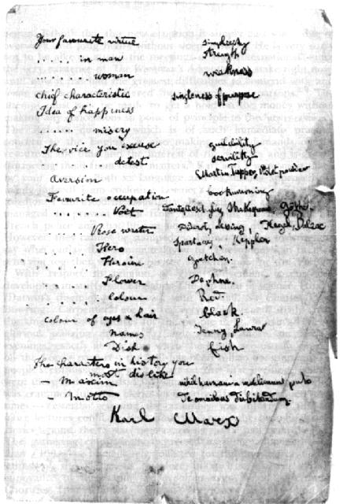

Source: MECW Volume 42, p. 567.
Transcribed: by Andy Blunden.
“Confessions” were semi-jocular questionaires that were very popular in Victorian England, and filling them out a common passtime in many families, including Marx's, where friends and relatives particpated. A number of versions of Confessions belonging to Marx have been preserved.
In the Spring of 1865 Marx stayed with his uncle, Lion Philips in Zalt Bommel (Holland), and his answers to the Confession he completed here is shown in the middle column below. His daughter Jenny kept an album, an image of which is shown, and the answers shown in the right hand column are in Laura Marx's hand. Where the answers are the same, it is shown only once.
Netchen, or Nannette, was Antoinette Philips, aged 28 at the time, Marx's cousin and a member of the Dutch section of the Internatrional. Martin Tupper was an English poet who penned trivial moralistic verses. Gretchen is the tragic heroine of Goethe’s Faust. “Keppler” refers to the great German astronomer, Johannes Kepler, and Spartacus was the leader of the slaves’ revolt in ancient Rome.
|
 | |||||||||||||||||||||||||||||||||||||||||||||||||||||||||||||||||||||||
Karl Marx
{kind=link}